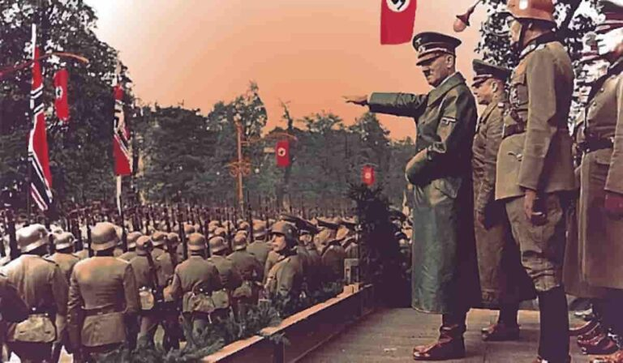
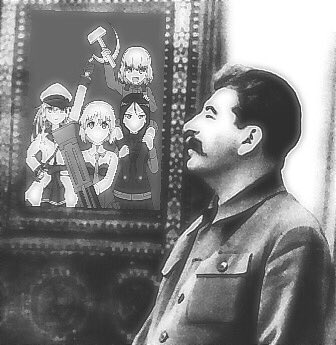

Completa la información con completa sinceridad, de lo contrario corre riesgo de fusilamiento...
Ejercitos con vacantes disponibles:
Ejercito alemán:

El ejercito alemán viene de alemania(el país con mayor cantidad de alemanes del mundo)
tambíen hay que recordad que los alemanes vienen de alemania(dato importante por si te olvidas de donde es el ejercito alemán)
Pros
Es un buen ejercito
Te dan pancito
Visten chido
Contras
No les puedes decir nada porque invaden tu país al día siguiente
No son humildes
A
Ejercito Sovietico

El ejercito sovietico se origino en la union sovietica por Lenin(Lenin)
Aya hace frío porque no hace calor
Pros
Vodka
Vodka
Vodka
Son bien basados porque pusieron a las personas homosexuales en un campo de concentración...
-El que le dieron leche paterna
Contras
Lamentablemente el socialismo no funcionó y todo se fue a la ñonga
Solo puedes tener una burra para aplicar la norteña :(